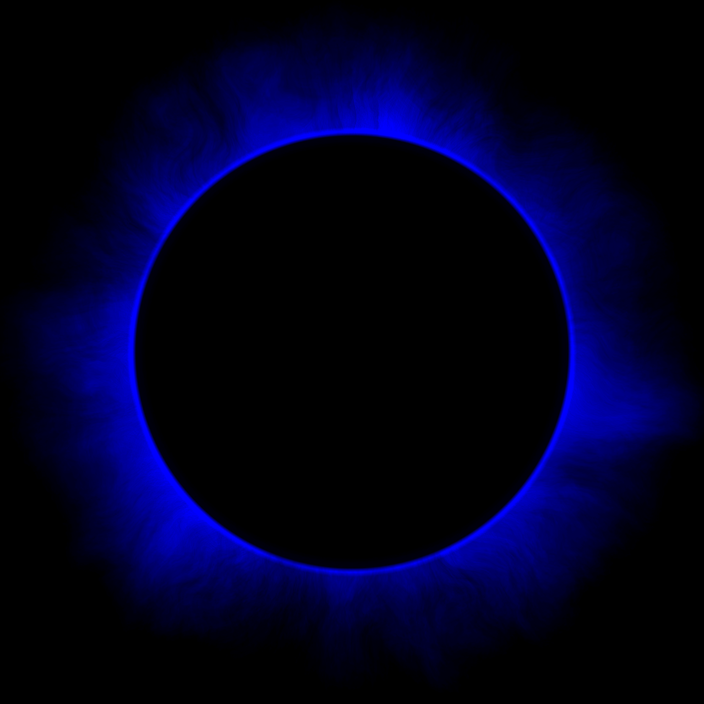

A world well into its epilogue.
A city shrouded in darkness.
A planet colder each day.
CORONA

Los Angeles, separated by only a thin glass dome from the hushed apocalypse without, holds tentatively to life. Political tensions mount among its Citizens, and change, in some direction, is imminent.
Amelia has worked the same job for years, driven by her older brother to provide for her family as much as she can. But when she runs face-first into an old, homeless man with a secret project and a mastery of martial arts — and he agrees to teach her — she starts to grow stronger, though with that strength comes distance from her family. As she struggles to keep old secrets under wraps, Amelia discovers the hidden forces operating against the city and the insurgency fighting them.
Ben is kept safely tucked away in his father’s skyscraper, insulated from the dangers of the world and taught by city-renowned instructors. It’s stifling, and when his sixteenth birthday comes and goes without a glimpse of the outside world, he reaches a breaking point. But being the son of an oligarch isn’t without its benefits, and he manages to sneak out and return unscathed and unnoticed. His curiosity leads him dark rabbit holes, though, and he begins to suspect his father of illicit dealings with strange characters.
The Earth hurtles through space, growing colder each day, the sun long since disappeared. The human race dwindles, and the last strongholds of warmth and culture are flickering. As paths cross and secrets come to light, the fate of more than just a city hangs in the balance.
43 of 52 chapters drafted
Corona is currently being written. The rough draft is expected to be completed in 2019, and, after editing, will be sent to a small list of alpha readers. It will then be opened up to a wider audience of beta readers. If you’re interested in being one of these beta readers, contact the address below.